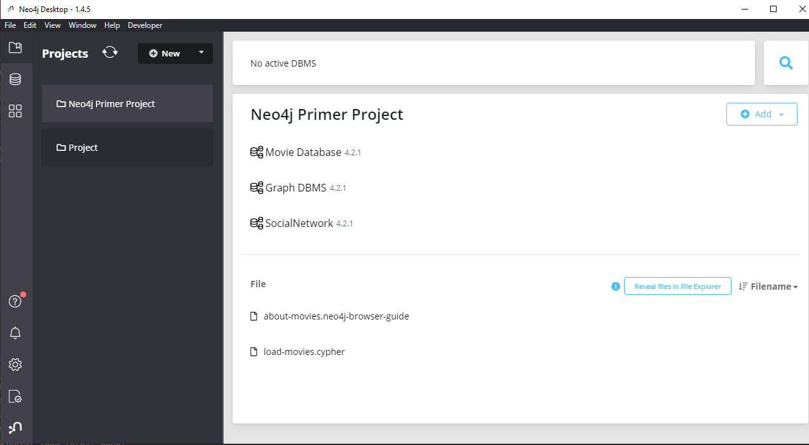
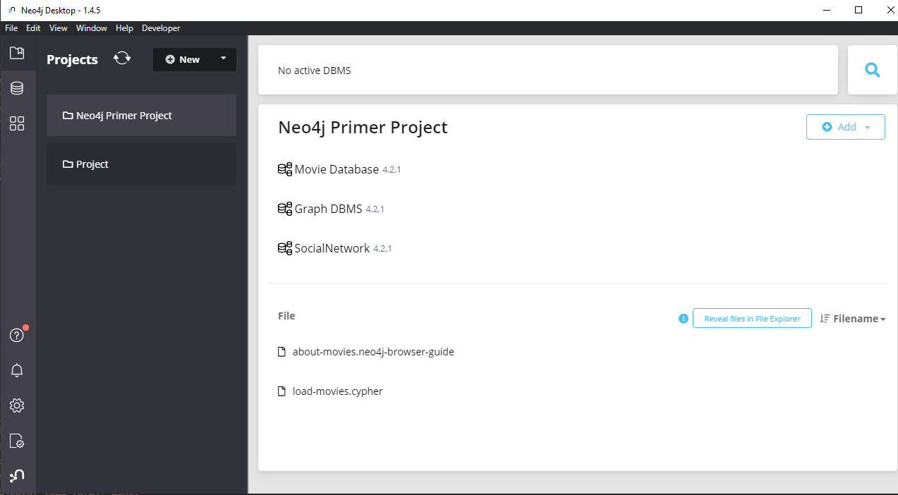

The first thing to ask, if we want to build an application is, which database
do we want to use?
My decision felt on Neo4j and there is plenty of reasons why. Neo4j is a
database that stores the data in a graph structure instead of tables.
It has great performance thanks to their fast queries which can be useful for
lots of data since we are making a social media model. Another great reason
to use Neo4j are the relations. Perfect for our use case we can define
complex relations and still be flexible.
Neo4j installation and setup
Browse for Neo4j community edition and install the desktop version. You have
to expose some of your personal information and accept the license but thats
nothing new.
After the installation open neo4j desktop. It should look like this:
You could just use some HTML in your Markdown:

The Movie Database is a default one. You can start it to explore a little of
the graph db environment. Hover over your database and click on start. You
can choose how to open the db, I am using the browser. The default username
is "neo4j" and password is "secret". You can go on details and change the
password.
If you are done with the exploration, you can create a new empty database. We
will use this one for our connection to our spring boot app
Connect with springboot app
Define your Neo4j connection in src/main/resources/application.properties
The value written in this example is the default connection. You actually
don't have to write anything if you use a default connection. Notice that
Neo4j uses a Bolt)
network protocol to connect. It will not acceptt a http connection.
Spring data Neo4J
The first thing to ask, if we want to build an application is, which database do we want to use?
My decision felt on Neo4j and there is plenty of reasons why. Neo4j is a database that stores the data in a graph structure instead of tables.
It has great performance thanks to their fast queries which can be useful for lots of data since we are making a social media model. Another great reason to use Neo4j are the relations. Perfect for our use case we can define complex relations and still be flexible.
Neo4j installation and setup
Browse for Neo4j community edition and install the desktop version. You have to expose some of your personal information and accept the license but thats nothing new.
After the installation open neo4j desktop. It should look like this:
You could just use some HTML in your Markdown:

The Movie Database is a default one. You can start it to explore a little of the graph db environment. Hover over your database and click on start. You can choose how to open the db, I am using the browser. The default username is "neo4j" and password is "secret". You can go on details and change the password.
If you are done with the exploration, you can create a new empty database. We will use this one for our connection to our spring boot app
Connect with springboot app
Define your Neo4j connection in src/main/resources/application.properties
The value written in this example is the default connection. You actually don't have to write anything if you use a default connection. Notice that Neo4j uses a Bolt) network protocol to connect. It will not acceptt a http connection.
Let's get started with some coding